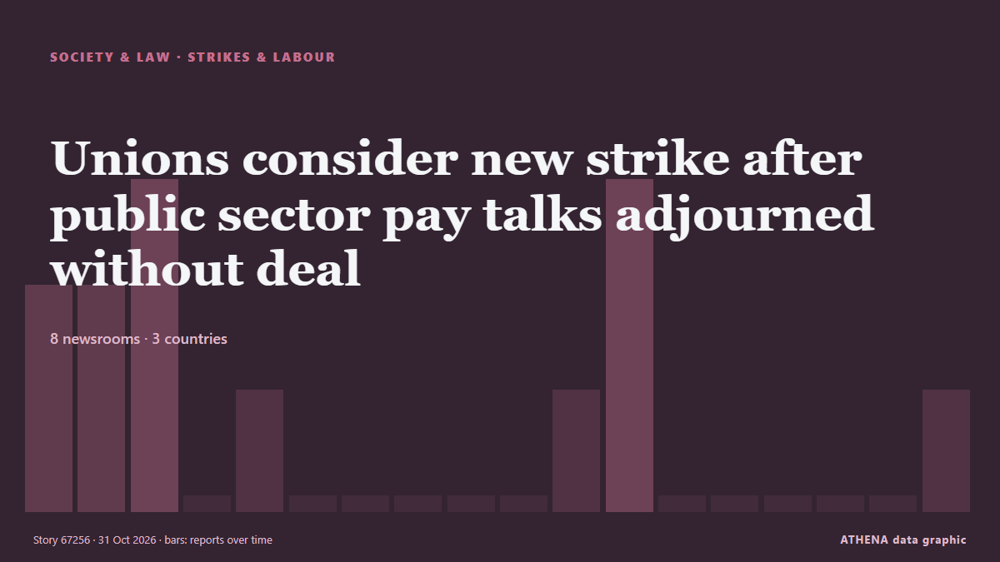

Strikes & labour
| 18 Oct | 0 |
|---|---|
| 19 Oct | 0 |
| 20 Oct | 0 |
| 21 Oct | 0 |
| 22 Oct | 1 |
| 23 Oct | 0 |
| 24 Oct | 0 |
| 25 Oct | 0 |
| 26 Oct | 3 |
| 27 Oct | 3 |
| 28 Oct | 4 |
| 29 Oct | 3 |
| 30 Oct | 5 |
| 31 Oct | 0 |

Unions consider new strike after public sector pay talks adjourned without deal
As talks were adjourned shortly before midnight on Friday, a union spokesperson said they’d reached an impasse. from TheJournal.ie
Berri warns against ending UNIFIL's mission in meeting with German minister
Speaker Berri warned Thursday of the danger of ending UNIFIL's mission before Resolution 1701 is fully implemented and Israeli forces completely withdraw from southern Lebanon. from Naharnet
Seafarers’ and Railway Workers’ Strikes Disrupt Public Transport in Greece
Teachers and civil servants are joining seafarers in their planned work stoppage and protests on Friday across several Greek cities. from to vima
EU to slap new €2 fee on online shopping orders from outside Europe
The EU will charge an extra €2 "processing fee" on parcels imported into the European Union from Sunday November 1st in a bid to reduce the influx of cheap Chinese products bought on the internet. from The Local Austria
Who gets paid when the credits roll
Punjab plans royalty law to protect film professionals. from Express Tribune
N70,000 transport allowance divides NLC, TUC
The Federal Government will pay workers a N70,000 monthly transport allowance for six months, beginning in November 2026, to cushion the effects of economic challenges. from Daily Trust
Jamia Millia Islamia agrees to hold student elections after weeks-long protest
The demonstrators ended their stir as the university set a deadline for implementing the students’ union framework and revoked disciplinary action against them. from Scroll.in
Rank-and-file gardaí to engage in work-to-rule during EU presidency meetings next month
Garda Commissioner pledges to reduce overtime from next month. from The Irish Times
AU Commission Chairperson urges Africa to capture greater value from resources, renews call for global Financial reforms
Addis Ababa, October 29, 2026 (FMC) — African Union Commission Chairperson Mahmoud Ali Youssouf has called for stronger African economic sovereignty, equitable global financial arrangements and… from Fana Broadcasting Corporate
EU scraps ‘associate member’ offer for Canada
A group of countries including Germany, Greece and France all objected to mentioning associate membership in a joint EU-Canada statement. from Politico Europe
Mofokeng’s European adventure gathers pace after latest Union masterclass
Relebohile Mofokeng scored and assisted as Royale Union Saint-Gilloise fought back from two goals down to beat Cercle Brugge 5-2, continuing his impressive start in Belgium. from IOL
EU backtracks on Canada becoming ‘associate member’
Several EU leaders pushed for the term to be removed from a joint draft statement with Canada. from Free Malaysia Today
Clocks go back this Sunday: When daylight saving time ends in Greece
Clocks will be turned back one hour on October 25, giving people an extra hour of sleep as winter time takes effect. from ProtoThema English